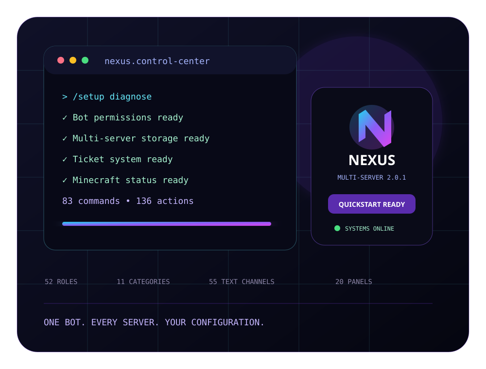

Kompletter Quickstart
Erstellt automatisch Rollen, Kategorien, Textkanäle, Voice-Kanäle und interaktive Panels für einen vollständigen Community-Server.
- 52 Rollen
- 11 Kategorien
- 55 Textkanäle
- 9 Voice-Kanäle
DISCORD AUTOMATION // MINECRAFT COMMUNITY SUITE
Nexus richtet Discord-Server ein, schützt Communities, verwaltet Tickets und Bewerbungen und zeigt deinen Minecraft-Status – mit eigener Konfiguration für jeden Server.

01 // KERNSYSTEME
Kein starres Einheitssetup. Jeder Server konfiguriert Branding, Minecraft, Kanäle, Rollen, Links und Module selbst.
Erstellt automatisch Rollen, Kategorien, Textkanäle, Voice-Kanäle und interaktive Panels für einen vollständigen Community-Server.
Jede Guild erhält getrennte Einstellungen. Admins können nur ihren eigenen Discord-Server bearbeiten.
Setup-Ablauf ansehen →Ticketpanel, Teamverwaltung, Übernahme, Prioritäten, Schließen und lokale Transkripte.
Commands öffnen →Status, Notizen, Interviews und Entscheidungen – direkt über Discord-Panels und Staff-Kanäle.
Java- oder Bedrock-IP, Port, Spielerzahl, Version und Status pro Discord-Server konfigurierbar.
Die frühere Livechat-Bridge ist vollständig entfernt.
AutoMod, Raid-Schutz, Anti-Nuke, Logging, Warnungen, Timeouts, Bans, Channel-Lockdown und Audit.
02 // EINRICHTUNG
/setup assistantZeigt die optimale Reihenfolge.
/setup diagnosePrüft Rechte und Konfiguration.
/config ...Branding, Minecraft und Module.
/setup quickstartErstellt die komplette Struktur.
03 // FAQ
Ja. Nexus 2.0.1 ist kostenlos nutzbar. Für den Betrieb brauchst du lediglich einen Discord-Bot, Node.js und einen Rechner oder Server, auf dem der Bot läuft.
Ja. Lässt du die GUILD_ID leer und registrierst globale Commands, kann derselbe laufende Bot auf mehreren Servern eingeladen werden. Jeder Server speichert seine Einstellungen getrennt.
Aktuell erfolgt die komplette Einrichtung direkt in Discord über /setup und /config. Dadurch ist kein zusätzliches Web-Dashboard nötig.
Nein. Die Velocity-Livechat-Bridge, der HTTP-Port und der Command /mcchat wurden vollständig entfernt. Minecraft-IP und Live-Status bleiben erhalten.
READY TO CONNECT?